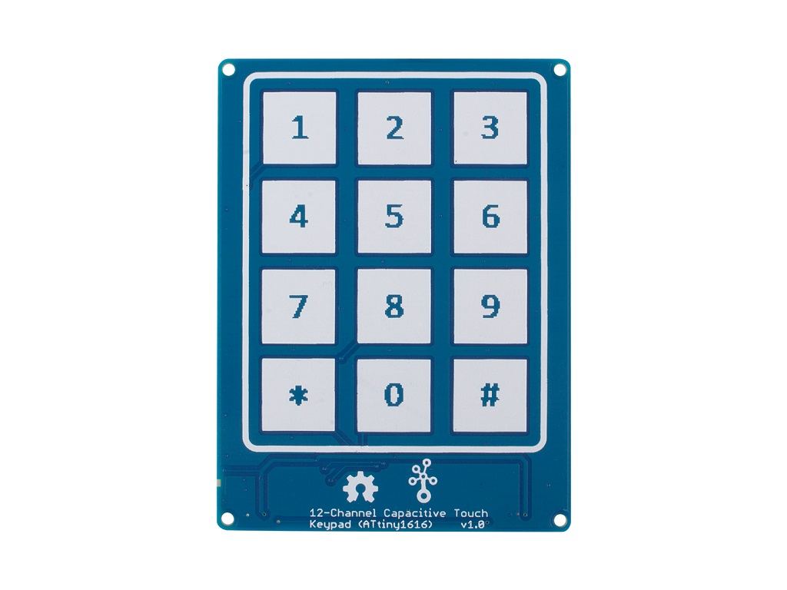

Etape1 : tappez 1= Atelier, 2= Tabata, 3= Fractionné aléatoire, 4= Combat
Etape2 : Choisir le nombre de cycle, round "dans la limite de 1-10"
Etape3 : Choisir le temps de travail
Etape4 : Choisir le temps de repos
Etape5 : Choisir vitesse 1=rapide ou 2=lent
Etape6 : Pressez le bouton pour commencer, bon entrainement!
Pourquoi un Keypad ?
Tout simplement car la meilleure façon possible de s'entrainer est que vous coach puissiez avoir un contrôle total sur le temps du chronomètre personnalisable donc perdez pas de temps et entrait vos valeurs, bon entrainement!
Il faut beaucoup de simplicité pour aimer.